Home / Past papers / MLP End Term / this paper
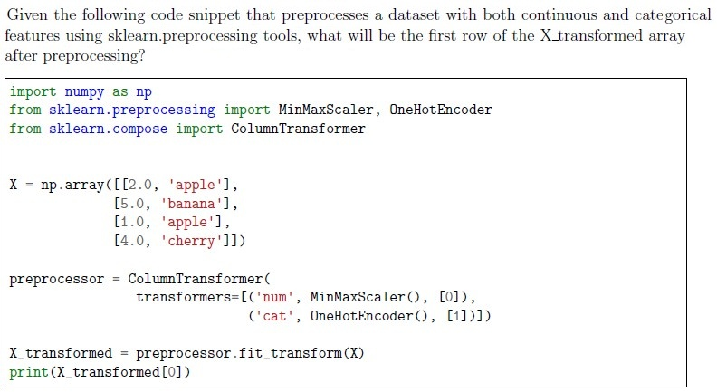
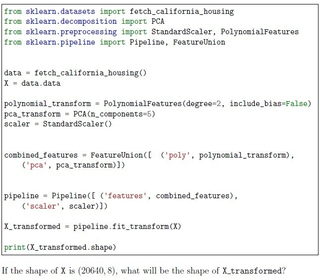
Consider the following code snippet: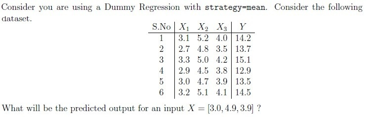
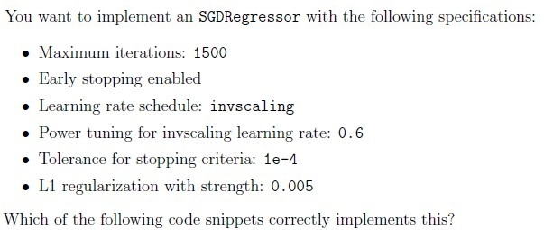
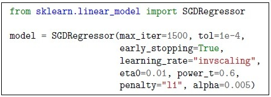
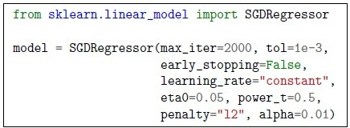
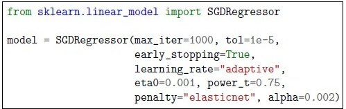
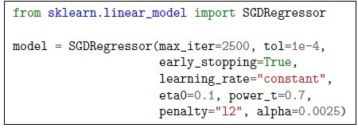
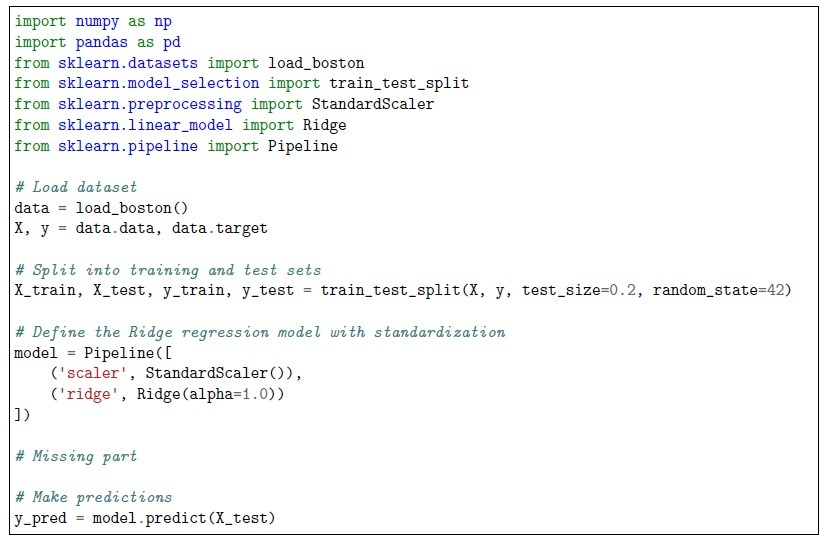
The following code attempts to implement Ridge regression on the Boston housing dataset but contains an error. The missing part should be correctly filled in to avoid issues during training. Which of the following correctly fills the missing part while ensuring proper preprocessing?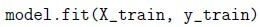
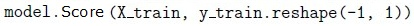
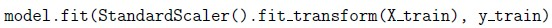
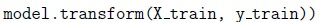
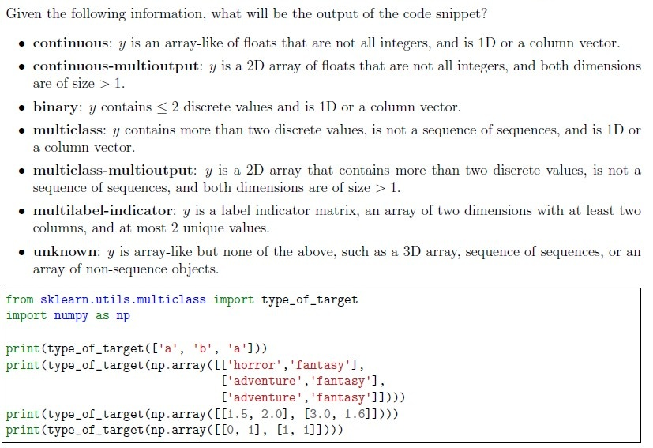
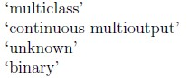
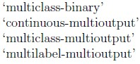
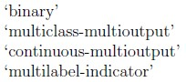
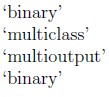
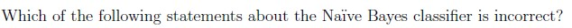
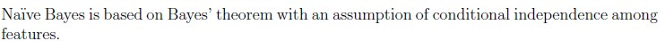
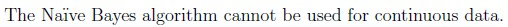
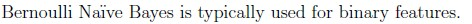
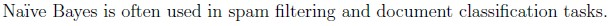
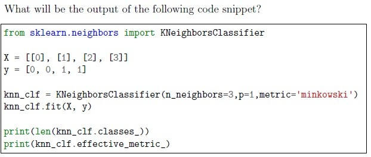
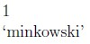
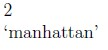
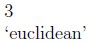
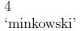
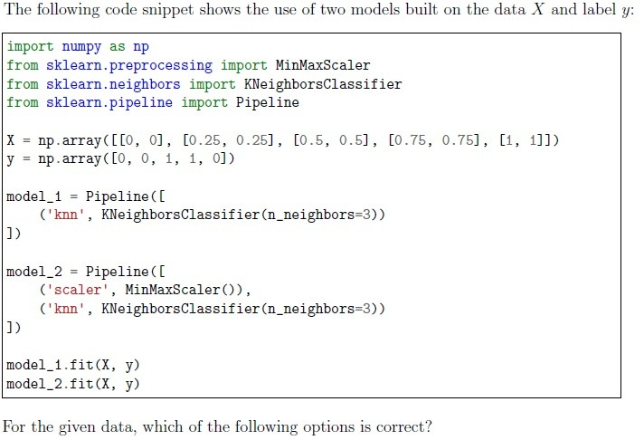
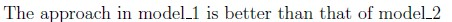
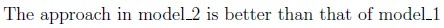
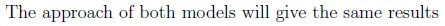
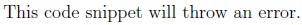
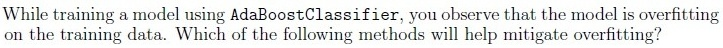
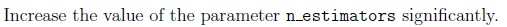
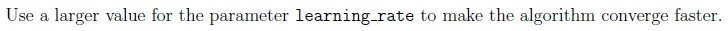
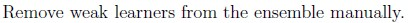
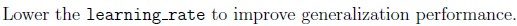
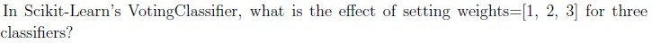
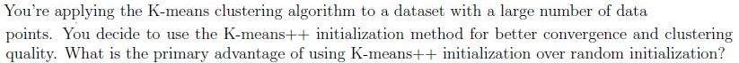
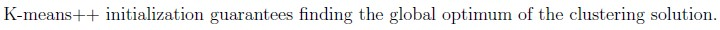
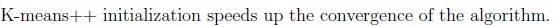
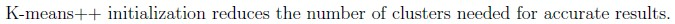
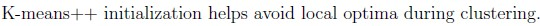
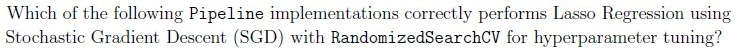
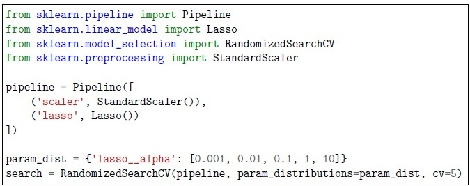
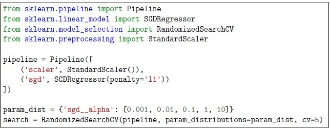
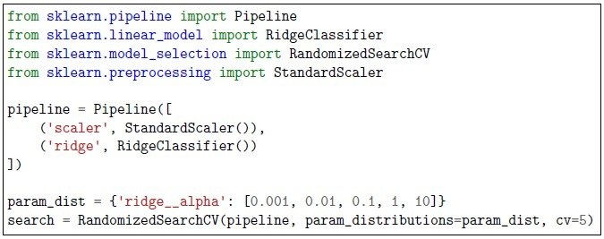
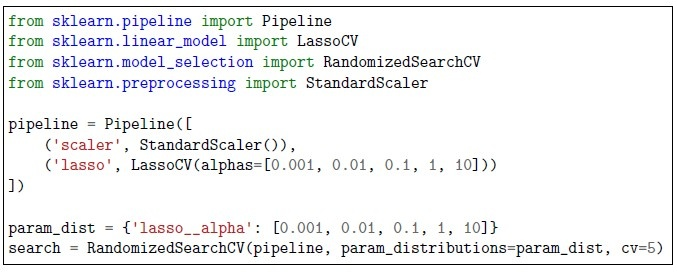
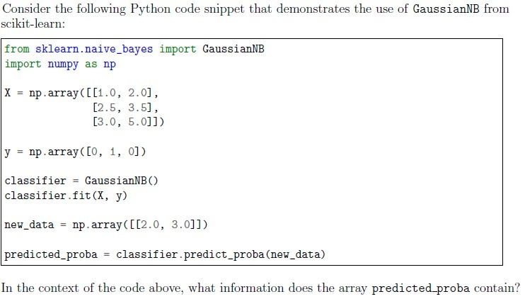
Auto-generated summary from the source site. Handy as a checklist; the lessons above explain each idea from scratch.
Here’s a structured summary of core topics, concepts, principles, and equations essential for the exam, followed by Mermaid knowledge graphs to visualize relationships.
Scaling/Normalization:
MinMaxScaler: Scales features to [0, 1] range.StandardScaler: Standardizes features to mean=0, std=1.Encoding Categorical Data:
OneHotEncoder: Converts categories into binary columns.LabelEncoder: Converts categories into integers (ordinal).Polynomial Features:
d and n original features:PCA (Principal Component Analysis):
n_components: Number of PCs to retain.from sklearn.preprocessing import MinMaxScaler, StandardScaler, OneHotEncoder, PolynomialFeatures
from sklearn.decomposition import PCA
### Example: Polynomial + PCA
poly = PolynomialFeatures(degree=2, include_bias=False)
pca = PCA(n_components=5)Dummy Regressor/Classifier:
strategy="mean": Predicts the mean of y (regression).strategy="most_frequent": Predicts the mode of y (classification).K-Nearest Neighbors (KNN):
p=1 in Minkowski), etc.effective_metric_: Returns the actual metric used (e.g., "manhattan").Naïve Bayes:
Variants:
GaussianNB: Continuous data (assumes Gaussian distribution).BernoulliNB: Binary features.MultinomialNB: Discrete counts (e.g., text data).predict_proba).Logistic Regression:
liblinear, lbfgs, saga (for small/large datasets).C (inverse of strength; smaller C = stronger regularization).ovr (one-vs-rest) or multinomial (softmax).Support Vector Machines (SVM):
linear, poly, rbf, sigmoid.C (trade-off between margin width and classification error).degree: Only used for kernel="poly".Random Forest:
Randomness Sources:
bootstrap=True).max_features < n_features).bootstrap=True.class_weight: Handles class imbalance.AdaBoost:
learning_rate or n_estimators.Stochastic Gradient Descent (SGD):
Learning Rate Schedules:
constant: Fixed rate (eta0).invscaling: Decays with power_t.adaptive: Adjusts based on loss.
l1 (Lasso), l2 (Ridge), elasticnet.tol for n_iter_no_change iterations.GridSearchCV: Exhaustive search over a parameter grid.RandomizedSearchCV: Random sampling from a distribution.Confusion Matrix:
F1-Score: Harmonic mean of precision and recall.
K-Means:
k-means++ spreads centroids to avoid poor clusters.Optimal k:
k.Hierarchical Clustering:
MLPRegressor/Classifier:
hidden_layer_sizes: Tuple specifying layers (e.g., (100, 50)).activation: relu, logistic, tanh.solver: adam, lbfgs, sgd.early_stopping: Stops training if validation score doesn’t improve.StandardScaler).Voting Classifier:
weights: Assigns importance to each model (e.g., [1, 2, 3]).Bagging (Random Forest):
Boosting (AdaBoost):
PCA:
n_components: Number of PCs to retain.Feature Union:
Feature Importance:
feature_importances_.Pandas:
df.isnull().sum(): Counts null values per column.df.dropna(): Drops rows/columns with nulls.df.fillna(): Imputes missing values.Filtering:
df[(df['sex'] == 'female') & (df['alive'] == 'yes')]Applying Functions:
df['isAdult'] = df['age'].apply(lambda x: x >= 18)